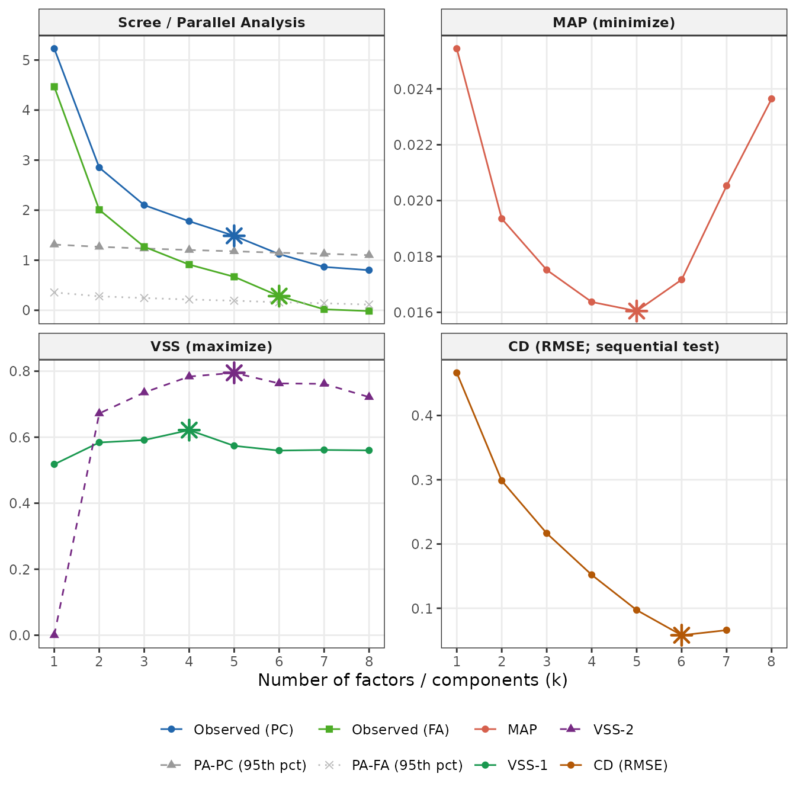

k is a decision, not an output
Before you can run ackwards(), you need a value for
k_max — the maximum depth of the hierarchy. This
is not the same question as “how many factors does my data really have?”
There is no single true k hidden in the data, and different selection
criteria will give different answers depending on their assumptions and
what they are optimized for.
The practical question is: what range of k is defensible, and
where should I look? suggest_k() is designed to
help you answer that. It runs five complementary criteria and reports
their recommendations together, so you can see where they agree and
where they diverge.
A few things to keep in mind before you start:
k_max is a maximum depth, not a claim about the true
structure. Setting k_max = 5 tells
ackwards() to fit models at every level from 1 to 5 and
examine how the structure evolves across those levels. It does not
assert that exactly five factors exist. In fact, deliberately setting
k_max one or two levels past the consensus — to watch factors fragment
at the deeper levels — is a normal and informative part of the
analysis.
Overextraction is the dominant error mode. Simulation studies consistently find that the most common mistake is retaining too many factors, not too few. An overextracted level introduces factors with only 1–2 strong loadings and between-level correlations near 1.0 (a sign that the parent factor simply split in two without adding interpretive content). Forbes (2023) documents this explicitly for the bass-ackwards context: non-replicable structure tends to appear at the deeper levels of an overextracted hierarchy. Use the criteria below to identify the upper end of the plausible range, and treat levels near that ceiling with appropriate skepticism.
No criterion is decisive on its own. Each of the five criteria below captures a different aspect of the data, tends to err in a different direction, and can fail in different circumstances. A consensus across multiple criteria is more trustworthy than any single recommendation.
The five criteria
suggest_k() computes five criteria from the same data.
Here they are with their logic, typical behavior, and practical
limitations.
PA-PC — Parallel Analysis (PC basis)
What it does. Computes PC eigenvalues for the observed correlation matrix, then simulates a large number of random correlation matrices of the same dimensions. Retains components whose observed eigenvalues exceed the 95th percentile of the simulated distribution.
Typical behavior. Tends to overextract — it often recommends more components than replicate in independent samples, particularly when items are moderately correlated (which they usually are in personality and clinical research). Treat its recommendation as an upper bound.
When it is useful. Best paired with
engine = "pca" in ackwards(), since both
operate on the same PC eigenvalue basis. It also provides a fast, stable
baseline across a wide range of data types.
Limitation. The 95th-percentile threshold is a convention, not a formal test. With large samples, even trivial components can exceed the threshold.
PA-FA — Parallel Analysis (FA basis)
What it does. The same logic as PA-PC, but applied to common-factor eigenvalues rather than PC eigenvalues. The observed FA eigenvalues are compared against the 95th percentile of simulated FA eigenvalues.
Typical behavior. More conservative than PA-PC. FA eigenvalues are smaller (they exclude unique variance), so fewer of them exceed the random-data threshold. PA-FA recommendations typically equal or fall below PA-PC.
When it is useful. The model-consistent criterion
for engine = "efa" or engine = "esem" in
ackwards(): if your analysis assumes a common-factor model,
comparing FA eigenvalues to a FA baseline is the better-matched
test.
Limitation. Like PA-PC, it can be underpowered with
small samples and returns NA when no observed FA eigenvalue
exceeds the random threshold (a sign that the data may not support a
factor model at all).
MAP — Minimum Average Partial
What it does. After extracting k components, computes the partial correlations among items (the correlations that remain after removing the k components). Reports the average squared partial correlation at each k. Recommends the k that minimizes this average — the point at which the components have removed as much shared variance as possible.
Typical behavior. Usually conservative — often recommends fewer factors than PA. Simulation studies find it performs well across a range of sample sizes and factor structures, particularly when the true number of factors is small to moderate.
When it is useful. A reliable secondary check that catches cases where PA overextracts. If MAP and PA-FA agree, you can be fairly confident in that range.
Limitation. MAP operates on PC components internally
(it uses psych::vss() with fm = "pc"), so its
recommendation reflects a component-extraction framework even when you
plan to use an EFA or ESEM engine in ackwards().
VSS-1 and VSS-2 — Very Simple Structure
What it does. Fits a “very simple structure” model at each k: a loading matrix where each item loads on only one factor (VSS-1) or at most two factors (VSS-2). Reports the fit of that simplified model at each k. Recommends the k that maximizes this fit.
Typical behavior. VSS-1 often peaks early (small k), making it conservative. VSS-2 tends to peak at a higher k. Both are sensitive to whether the true structure actually has a simple-structure form.
When it is useful. As a cross-check on the other criteria. When VSS-1 and VSS-2 agree with MAP, the simple-structure interpretation is robust. When they disagree, the data may have a more complex loading structure.
Limitation. VSS criteria work poorly when items have meaningful cross-loadings (a common situation with personality scales). In those cases, VSS-1 in particular may underestimate k.
CD — Comparison Data
What it does. Generates comparison datasets by drawing from the marginal distributions of the observed items (preserving each item’s shape without assuming multivariate normality). Computes eigenvalues for each comparison dataset and applies a sequential one-sided Wilcoxon test (default α = 0.30): a factor is retained while adding it significantly reduces RMSE relative to the previous level; the procedure stops at the first non-significant improvement. The recommended k is the last retained level — it is not necessarily the minimum of the RMSE curve.
Typical behavior. Among the most accurate criteria in simulation studies (Ruscio & Roche, 2012), particularly when items have non-normal distributions — a common feature of Likert-scale data. More conservative than PA-PC.
When it is useful. Ordinal or skewed data where the normality assumptions underlying PA are questionable. CD samples from the actual marginal distributions, so it implicitly captures item skewness and discreteness.
Limitation. Requires the EFAtools
package (install separately). Needs the raw data matrix — it cannot run
from a correlation matrix alone. The resampling step is stochastic, so
results can vary slightly across runs (use seed for
reproducibility). suggest_k() reports
cd_available = FALSE when EFAtools is absent
and skips CD gracefully.
A note on cor = "spearman": the other four criteria
respect the cor argument and compute their eigenvalues from
the requested correlation matrix. CD always uses Pearson correlations
internally (an EFAtools constraint). When
cor = "spearman" is requested, suggest_k()
warns that CD and the other criteria may diverge.
Summary table
| Criterion | Tends to | Best for | Requires |
|---|---|---|---|
| PA-PC | Overextract (upper bound) | engine = "pca" |
psych |
| PA-FA | Conservative |
engine = "efa" / "esem"
|
psych |
| MAP | Conservative | General secondary check | psych |
| VSS-1/2 | Variable | Simple-structure check | psych |
| CD | Accurate in simulation; can over-retain on large, correlated samples | Ordinal/non-normal data | EFAtools |
For a complete reference — argument definitions, return value
structure, and citations — see ?suggest_k.
Running suggest_k()
sk <- suggest_k(bfi, seed = 42)
#> ℹ Running parallel analysis (20 iterations, PC + FA)...
#> ✔ Running parallel analysis (20 iterations, PC + FA)... [281ms]
#>
#> ℹ Running MAP and VSS...
#> ✔ Running MAP and VSS... [170ms]
#>
#> ℹ Running Comparison Data (CD)...
#> ✔ Running Comparison Data (CD)... [9.4s]
#>
print(sk)
#>
#> ── Factor / Component Count Suggestion (ackwards) ──────────────────────────────
#> Variables: 25
#> n: 875
#> Basis: pearson
#> Tested k: 1-8
#>
#> ── Criteria (k = 1-8) ──
#>
#> k = 1: PA-PC ✔ PA-FA ✔ MAP 0.0254 VSS-1 0.5178 VSS-2 0.0000 CD ✔
#> k = 2: PA-PC ✔ PA-FA ✔ MAP 0.0194 VSS-1 0.5839 VSS-2 0.6719 CD ✔
#> k = 3: PA-PC ✔ PA-FA ✔ MAP 0.0175 VSS-1 0.5913 VSS-2 0.7354 CD ✔
#> k = 4: PA-PC ✔ PA-FA ✔ MAP 0.0164 VSS-1 0.6215* VSS-2 0.7837 CD ✔
#> k = 5: PA-PC ✔ PA-FA ✔ MAP 0.0160* VSS-1 0.5738 VSS-2 0.7950* CD ✔
#> k = 6: PA-PC - PA-FA ✔ MAP 0.0172 VSS-1 0.5594 VSS-2 0.7629 CD ✔*
#> k = 7: PA-PC - PA-FA - MAP 0.0205 VSS-1 0.5613 VSS-2 0.7616 CD -
#> k = 8: PA-PC - PA-FA - MAP 0.0236 VSS-1 0.5600 VSS-2 0.7215 CD -
#>
#> ── Recommendations ──
#>
#> • PA-PC: k <= 5
#> • PA-FA: k <= 6
#> • MAP: k = 5
#> • VSS-1: k = 4
#> • VSS-2: k = 5
#> • CD: k = 6
#> Consensus range: k = 4-6
#> ────────────────────────────────────────────────────────────────────────────────
#> Note: k_max in ackwards() is a maximum depth. Setting k_max one or two levels
#> above the consensus to observe factor fragmentation is intentional.
#> Caution: PA-PC tends to overextract; structures may not replicate (Forbes,
#> 2023). PA-FA and CD are more conservative. Use the range.The output prints in two sections. The criteria table shows the raw evidence at each k, using two display conventions:
- Checkmark / dash (PA-PC, PA-FA, and CD): a checkmark (✔) marks each k the criterion retains, up to its recommended ceiling; a dash (-) marks the levels above that ceiling, which it does not retain. These criteria answer a yes/no “keep this level?” question at each k, so there is no number to show.
-
Number with a star (MAP, VSS-1, VSS-2): these
criteria produce a score at each k — a quantity to minimize
(MAP) or maximize (VSS) — so the raw value is printed, and the single
optimal k (the min or max) is starred (
*). Reading the surrounding numbers tells you how sharp the optimum is: a lone tall peak is decisive, a near-flat plateau is not.
The recommendations block summarizes each
criterion’s single suggested k (or range for PA), and the
consensus range spans the minimum to maximum across all
available recommendations. Note that this block lists
six lines by default even though
suggest_k() runs five criteria:
"vss" is one entry in the criteria argument
(they share a single psych::vss() call) but reports two
numbers, VSS-1 and VSS-2, since it fits simple structure at two
different complexities.
The diagnostic plot
autoplot(sk)
When EFAtools is installed and CD is computed, the plot
is a 2×2 grid; otherwise it falls back to a single-column three-panel
layout.
Scree / Parallel Analysis (top-left). The solid blue line is the observed PC eigenvalue profile; the grey dashed line is the PA-PC 95th-percentile threshold. Retain PC-based components where the blue line is above the grey dashed line (left of the PA-PC star). The solid teal line and grey dotted line show the same for the FA basis (PA-FA). The two comparisons are independent — you read each pair against its own threshold.
MAP (top-right). Lower is better. The criterion minimizes at the starred k.
VSS (bottom-left). Higher is better. VSS-1 (solid green) and VSS-2 (dashed purple) each peak at their starred k.
CD — Comparison Data (bottom-right, when available).
Shows the mean RMSE between observed and comparison-data eigenvalues at
each k. The curve is drawn only over the levels that were actually
computed by EFAtools::CD (up to the first non-significant
improvement plus one). The starred k is the last level retained by the
sequential Wilcoxon test — it need not be the visible minimum of the
plotted curve. Requires EFAtools.
Look for visual convergence across panels. When the scree elbow, the
MAP minimum, and a VSS peak all occur at roughly the same k, the
evidence is unusually consistent. When they scatter, you have genuine
ambiguity, and exploring a range of k values in ackwards()
is the right response.
Matching the criterion to your engine
| If you plan to use… | Prefer… | Rationale |
|---|---|---|
engine = "pca" |
PA-PC, MAP | PA-PC uses the same PC basis as the engine |
engine = "efa" |
PA-FA, MAP, CD | PA-FA is basis-consistent; MAP and CD are robust across models |
engine = "esem" |
PA-FA, MAP, CD | Same rationale as EFA |
This is a best-practice recommendation, not a hard rule. Running all five criteria regardless of your engine is cheap and informative — you will see where the criteria agree and where they pull in different directions.
The arguments
criteria — which criteria to compute
By default suggest_k() runs all five criteria (CD only
if EFAtools is installed). The criteria
argument lets you request a subset — useful when you only trust certain
criteria for your data, or when you want a faster run:
# Just MAP (skips parallel analysis and CD entirely)
suggest_k(bfi25, criteria = "map")
# Only the two parallel-analysis criteria
suggest_k(bfi25, criteria = c("pa_pc", "pa_fa"))Skipping is a genuine computational saving, not just output
filtering: "pa_pc" and "pa_fa" share a single
psych::fa.parallel() call (so both run, or neither), and
"map" and "vss" share a single
psych::vss() call. Requesting "map" alone
therefore avoids the parallel-analysis simulation altogether.
"vss" selects VSS-1 and VSS-2 together as a unit.
Criteria you do not request are skipped, and their k_*
fields in the result are NA. The print()
method and the autoplot() diagnostic render only the
criteria you asked for, and the consensus range is computed from the
requested criteria only.
cor — correlation basis
cor controls the correlation matrix used to compute
eigenvalues for PA, MAP, and VSS. It should match (or approximate) the
cor argument you plan to use in
ackwards().
Ordinal data caveat. If your items are ordinal
(e.g., Likert scales), you may plan to use
cor = "polychoric" in ackwards(). But
suggest_k() does not support
cor = "polychoric" — parallel analysis and MAP do not have
a polychoric eigen-decomposition path. The standard practice is to run
suggest_k() with the default cor = "pearson"
and then switch to cor = "polychoric" in
ackwards(). The PA-PC and PA-FA recommendations on the
Pearson matrix serve as a reasonable upper and lower bound for the
polychoric analysis; see vignette("ackwards-ordinal") for
more.
n_iter — Monte Carlo iterations
n_iter controls how many random matrices are simulated
for parallel analysis. The default is 20, which is fast but noisy. For a
publication-ready result, increase to 100 or more:
sk_hi <- suggest_k(bfi, n_iter = 100, seed = 42)For a quick initial exploration, n_iter = 5 is often
sufficient:
sk_fast <- suggest_k(bfi, n_iter = 5)
seed — reproducibility
The seed argument is passed to set.seed()
before the Comparison Data (CD) step, making CD results reproducible
across runs.
Honest caveat. Parallel analysis uses
psych::fa.parallel() internally, which does not respond
reliably to set.seed(). PA simulation results will vary
slightly from run to run regardless of the seed argument —
this is a known limitation of the underlying function. CD, which uses
EFAtools::CD(), does respond to set.seed() and
is reproducible when seed is set.
k_max — ceiling for the search
k_max is the maximum number of factors tested. The
default is min(ncol(data) - 1, 8). Increase it if you
expect a deeper hierarchy; reduce it to speed up computation when you
already have a strong prior. Note that k_max here is a
search ceiling for suggest_k() and need not equal the
k_max you ultimately pass to ackwards().
When the criteria agree — and when they don’t
suggest_k() earns its keep precisely when the criteria
disagree, because the spread tells you how much the choice of k
is a judgement call rather than a fact read off the data. It helps to
see both extremes.
Idealized data. sim16 is a built-in
simulated dataset (1,000 cases, 16 continuous variables) with a known,
cleanly separated 1 → 2 → 4 hierarchy (see ?sim16). When
the planted signal is this strong and this clean, the criteria line
up:
The criteria collapse onto essentially one answer — the consensus is
k = 4, recovering the four factors built into sim16. This
is what “watch the method recover a known structure” looks like. It is
not, however, what most real datasets look like, so do not
treat this tidy consensus as the normal case.
Realistic data. The BFI-25, worked through next, is the contrast. Its criteria span k = 4–6, and no single value is obviously correct. That disagreement is not a defect in the criteria; it is a faithful signal that the data support a band of defensible depths. Reasoning under that kind of disagreement — not chasing a single number — is the skill this vignette is really about.
A worked recommendation for the BFI
The BFI-25 has 25 items measuring five personality traits. The criteria do not all converge here, which is itself informative:
print(sk) # reproduced from earlier
#>
#> ── Factor / Component Count Suggestion (ackwards) ──────────────────────────────
#> Variables: 25
#> n: 875
#> Basis: pearson
#> Tested k: 1-8
#>
#> ── Criteria (k = 1-8) ──
#>
#> k = 1: PA-PC ✔ PA-FA ✔ MAP 0.0254 VSS-1 0.5178 VSS-2 0.0000 CD ✔
#> k = 2: PA-PC ✔ PA-FA ✔ MAP 0.0194 VSS-1 0.5839 VSS-2 0.6719 CD ✔
#> k = 3: PA-PC ✔ PA-FA ✔ MAP 0.0175 VSS-1 0.5913 VSS-2 0.7354 CD ✔
#> k = 4: PA-PC ✔ PA-FA ✔ MAP 0.0164 VSS-1 0.6215* VSS-2 0.7837 CD ✔
#> k = 5: PA-PC ✔ PA-FA ✔ MAP 0.0160* VSS-1 0.5738 VSS-2 0.7950* CD ✔
#> k = 6: PA-PC - PA-FA ✔ MAP 0.0172 VSS-1 0.5594 VSS-2 0.7629 CD ✔*
#> k = 7: PA-PC - PA-FA - MAP 0.0205 VSS-1 0.5613 VSS-2 0.7616 CD -
#> k = 8: PA-PC - PA-FA - MAP 0.0236 VSS-1 0.5600 VSS-2 0.7215 CD -
#>
#> ── Recommendations ──
#>
#> • PA-PC: k <= 5
#> • PA-FA: k <= 6
#> • MAP: k = 5
#> • VSS-1: k = 4
#> • VSS-2: k = 5
#> • CD: k = 6
#> Consensus range: k = 4-6
#> ────────────────────────────────────────────────────────────────────────────────
#> Note: k_max in ackwards() is a maximum depth. Setting k_max one or two levels
#> above the consensus to observe factor fragmentation is intentional.
#> Caution: PA-PC tends to overextract; structures may not replicate (Forbes,
#> 2023). PA-FA and CD are more conservative. Use the range.Reading the rendered table:
MAP and VSS-2 agree on k = 5, with VSS-1 slightly more conservative at k = 4. Two conservative criteria converging is a meaningful signal; the modal answer from the non-PA criteria is 5.
PA-FA exceeds PA-PC in this run (6 vs. 5). Normally PA-PC over-extracts relative to PA-FA, making PA-PC the liberal upper bound. Here the relationship inverts — a nuance in this dataset’s eigenvalue geometry, not a contradiction. Read both, but trust PA-FA as the model-consistent criterion for EFA and ESEM engines.
CD agrees with PA-FA (k = 6, when
EFAtools is available). Both point to a sixth factor worth
examining. CD resamples from the marginal item distributions without
preserving inter-item correlations, so on datasets with strong structure
it can over-retain; here it lands conservatively at 6, in line with the
other liberal criterion.
Defensible choice: k_max = 6. This
matches the PA-FA and CD recommendations and sits one level above the
MAP/VSS-2 consensus of 5. Setting k_max = 6 lets
ackwards() show whether a sixth level reveals interpretable
sub-facets or merely splits the Big Five into arbitrary
micro-factors.
If the k = 6 level looks like overextraction (very thin arrows, factors that split and immediately re-merge, between-level r ≈ 1), you can interpret down to k = 5 with confidence that you have not missed structure. If k = 6 reveals interpretable sub-facets, you have found something worth reporting.
This “set k slightly high, then interpret down” approach is the standard bass-ackwards workflow. The method is specifically designed for this kind of structured exploration.
References
Forbes, M. K. (2023). Improving hierarchical models of individual differences: An extension of Goldberg’s bass-ackward method. Psychological Methods. https://doi.org/10.1037/met0000546
Horn, J. L. (1965). A rationale and test for the number of factors in factor analysis. Psychometrika, 30(2), 179–185. https://doi.org/10.1007/BF02289447
Revelle, W., & Rocklin, T. (1979). Very simple structure: An alternative procedure for estimating the optimal number of interpretable factors. Multivariate Behavioral Research, 14(4), 403–414. https://doi.org/10.1207/s15327906mbr1404_2
Ruscio, J., & Roche, B. (2012). Determining the number of factors to retain in an exploratory factor analysis using comparison data of a known factorial structure. Psychological Assessment, 24(2), 282–292. https://doi.org/10.1037/a0025697
Velicer, W. F. (1976). Determining the number of components from the matrix of partial correlations. Psychometrika, 41(3), 321–327. https://doi.org/10.1007/BF02293557